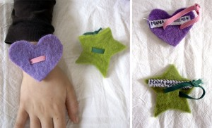

En fiestas grandes con mucha gente... se pueden perder fácilmente a los peques. En el reverso de una pulsera de fieltro he dejado mi numero.
It´s easy to lose your kid on a party with a lot s of people.On the other side of an bracelet of felt I wrote down my telephone number.
Auf Menschenansammlungen geht es schnell, dass man seine Kleinen aus den Augen verliert. Auf der Rückseite eines Filzarmbandes habe ich meine Telefonnummer geschrieben.